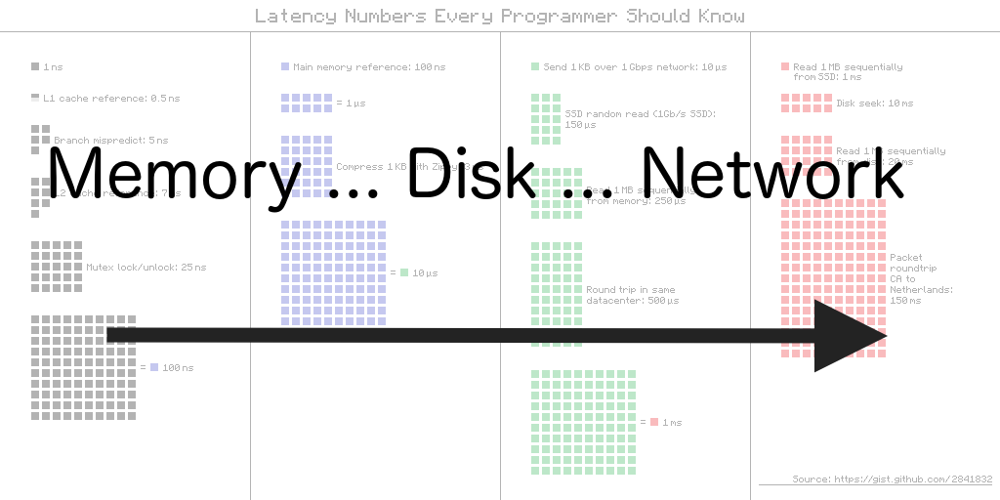
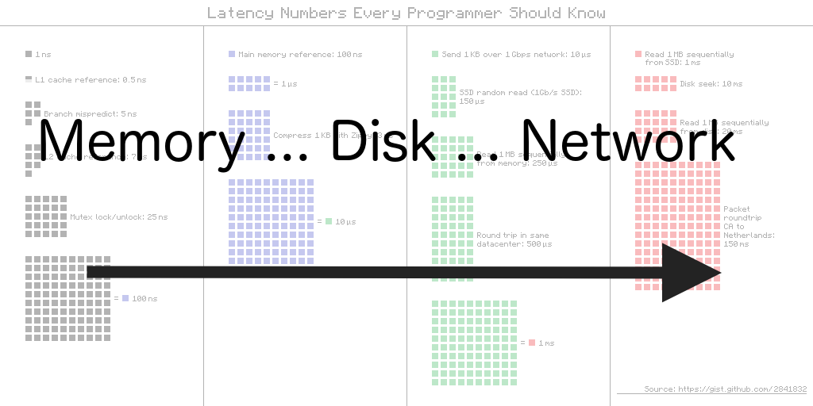

Offline, progressive, and multithreaded
A peek at webapps of the future

@nolanlawson

Progressive web apps!
Bruce Lawson on PWAs

HTML [is] in direct competition with other technologies intended for applications deployed over the web, in particular Flash and Silverlight.
– Ian Hickson, 2009 (via Bruce Lawson)
[The web] won on desktop, just in time for mobile to eat the world.
– Alex Russell, 2016
HTML5 was a response to Flash
PWAs are a response to native mobile apps
| Native apps | Web apps | PWAs | |
|---|---|---|---|
| 📶 Offline | ✔ | ❌ | ✔ |
| 📈 Progressive | ❌ | ✔ | ✔ |
| 🐙 Multithreaded | ✔ | ❌ | ✔ |
📶 Offline
"Offline-first"
Offline-first is about speed ⚡
 

Memory
Filesystem
Network
How do we offline?
The web platform has always had two solutions to every problem: the deprecated one you shouldn't use and the one that's not yet ready.
– Sylvain Galineau
| Ye olde way | The hot 🔥 new way | |
|---|---|---|
| Static data | AppCache | Cache API (Service Worker) |
| Dynamic/query data | LocalStorage, WebSQL |
IndexedDB |
📈 Progressive
"Progressive enhancement"
- Weak version: upgrade per capabilities, progressively add features
- Strong version: your site should work without JavaScript
In 2016, it's okay to build a website that doesn't work without JavaScript.
Smartphones are becoming more pervasise than connectivity. When you have a supercomputer in your pocket, but intermittent connectivity, the ability to work offline is the key to ubiquity.
– Tom Dale
Progressive rendering
This is slow 🐌
<html>
<script src="gigantic-app.js"></script>
</html>JS frameworks embracing progressive rendering
- FastBoot (Ember)
- Server-side React
- Angular 2 isolated renderer
- etc.
🐙 Multithreaded
Why multithread? Because jank.


Web workers
// index.js
var worker = new Worker('worker.js');
worker.postMessage('ping');
worker.onmessage = function (e) {
console.log(e.data); // 'pong'
};// worker.js
self.onmessage = function (e) {
console.log(e.data); // 'ping'
self.postMessage('pong');
};
The gain is pretty marginal... and it just adds a lot of development complexity. This is probably the reason we haven't seen web worker-based rendering architecture widely used in real apps.
– Evan You
2009
2009
2019?
What about progressive rendering?
Webapps of the future
- 📶 Offline
- 📈 Progressive
- 🐙 Multithreaded
It's all about
THE USER
Thanks!
nolanlawson.github.io/fronteers-2016
- Sources
- Mobile Web vs. Native Apps or Why You Want Both
- Alex Russell: Progressive Web Apps (video)
- Sylvain Galineau comment (original tweet deleted)
- Regressive web apps
- The web isn't uniform
- Everyone has JavaScript, right?
- Tom Dale: Responsive Field Day 2015
- Paul Lewis on progressive rendering
- Introducing Pokedex.org
- React Web Worker Renderer
- HTML5WorkerTest.com
- Run Express server in your browser
- babel-service
- Image attribution
{kind=link}
{kind=link}
{kind=link}
{kind=link}
.jpg/1280px-Sarah_(cheetah).jpg){kind=link}
{kind=link}